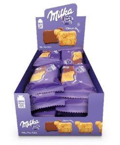
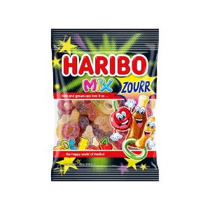

에 쿠팡 화면에서 사람이 직접 확인한 가격이에요. 쿠팡 쪽은 12,990원짜리 10개들이를 하나 값으로 나눈 거예요.
PX에서 사면 719원 아껴요.
PX 초콜릿·캔디 46가지 중에 7번째로 많이 아끼는 물건이에요.
초콜릿·캔디 10개 중 9개는 PX가 더 저렴해요.
이 상품은 온라인 후기가 16,667개 있었어요. PX가 확실히 저렴하다고 보시면 돼요.
| 상품명 | 앰지코리아 밀카 무 40G |
| 제조사 | (주)앰지코리아 |
| 규격 | 40g |
| 분류 | 식품 · 초콜릿·캔디 |
| 군마트 판매가 | 580원 |
| 쿠팡 낱개가 | 1,299원 (12,990원 ÷ 10개) |
| 확인한 날 | |
| 쿠팡 리뷰수 | 16,667 |
PX에서 살 물건 고르는 중이라면
더 이상 직접 비교하지 마세요.
군마트 상품을 한곳에 모아 PX 가격과 온라인 가격을 쉽게 비교할 수 있습니다.

이렇게 상품마다 PX 가격과 온라인 가격을 나란히 놓고 볼 수 있습니다.
ㄷㅌㅈ처럼 초성으로도 검색할 수 있어요.
국방가족 분들이 조금이라도 편하게 군마트를 이용하셨으면 하는 마음으로 만들었습니다.
국방가족을 위한 작은 재능기부입니다.